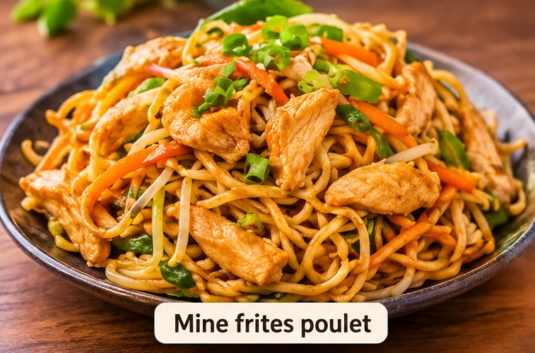

Mines frites poulet
Nouilles sautées au wok, poulet tendre, légumes croquants.
Environ Rs 165
Le petit couloir le plus gourmand de Grand Baie.
Noté 4,5 sur 5 sur Tripadvisor, avec près de 300 avis de voyageurs et de gens du coin.
Une ambiance de cantine populaire : on mange au milieu des habitués.
Lundi au samedi, 11h à 17h30.
Fermé le dimanche.